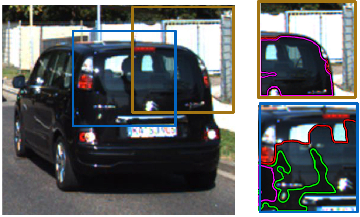
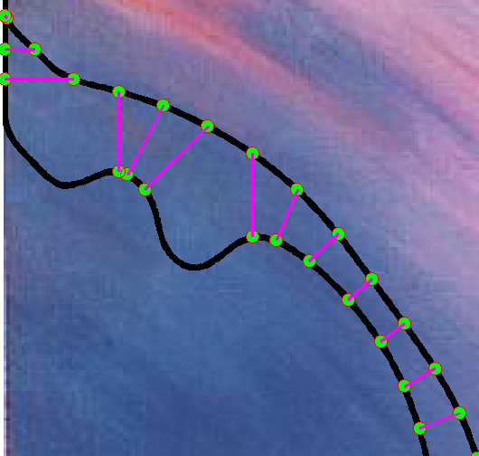
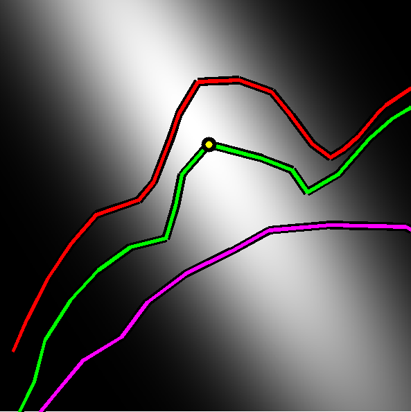
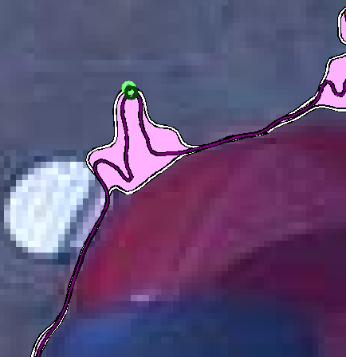
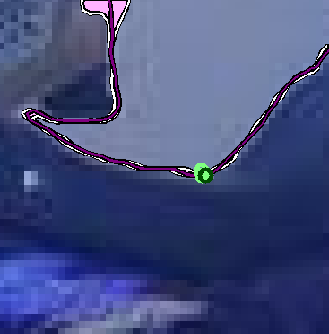
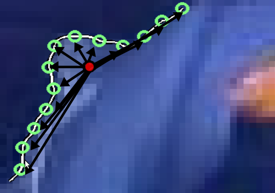
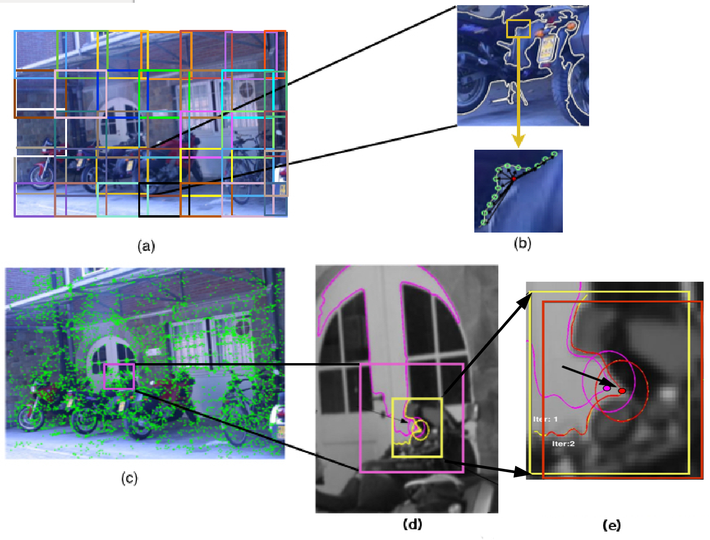
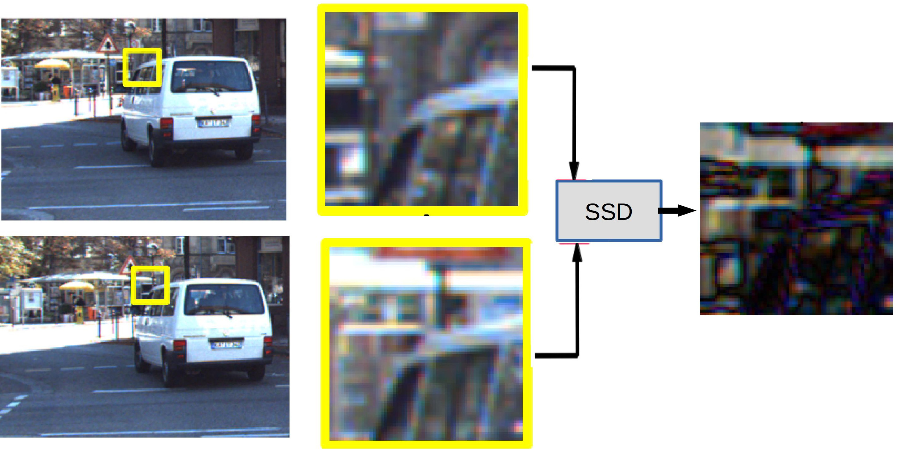
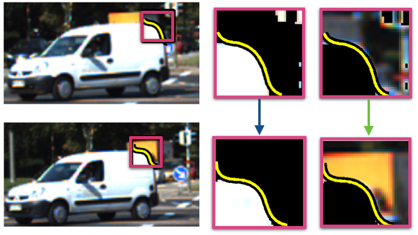

We define our corners on level lines, which are lines connecting points having the same intensity. Portions on these level lines that do not move much when the intensity is varied are portions with good perpendicular gradients on the level line and are called stable in this work. When additionally, such level lines turn, then such corner points can be discriminated from other points in the neighborhood and detected as feature points.
The stability of a level line is defined by computing the distance between neighboring level lines (Figure 3).
 |
Figure 3. Stable and Unstable level lines in brown (top right) and blue (bottom right) boxes respectively. The Green level line is tested
by considering the neighboring level lines in red and purple respectively. Note that
the lines are very close in the brown box due to which they mostly overlap in the illustration. |
The distance between neighboring level lines may be calculated using a variety of measures, one of which is to compute the euclidean distance between corresponding points. The problem associated with this is shown in Figure 4(a). We use an area based measure to overcome this, and make it more robust by computing Gaussian weighted areas (Figure 4(b)). The advantage in this is shown in Figure 5.
 |
 |
Figure 4. (a) Problems with computing correspondences on neighbouring curves at concave and convex points. An area based measure is more robust. | (b) Gaussian weighting centered on the yellow candidate corner on a level line. |
 |
 |
Given the stability of the level line segments, a non-maximal suppression is finally done by picking only those segments that have a higher stability value than their immediate neighbors. Such maximally stable level line segments are denoted as MLL in this work.
The corners on MLLs are distinctive and can be differentiated from other points in the neighborhood. The distribution of points on the curve centered at the candidate corner point p is determined (Figure 6) using their second moment (covariance) matrix. The eigenvalues of this matrix reflect the distribution of the points along two principal orthogonal directions and high values of both indicate a corner [3].
 |
Figure 6. The vectors connecting the points (in green) on the level line segment to their
mean point. The distribution of these vectors is used to determine the cornerness of this level line segment. |
A point p is a feature point at scale s if it is maximally stable according to the stability measure and the cornerness of p is the local maxima along the level line at scale s. The entire algorithm is shown in Figure 7.
 |
Figure 7. An Image divided into overlapping blocks of size 2Bs. Different blocks are shown in different colors for clarity purposes.
(b) A sample MLL in one sample block (top) and a corner found on it (bottom).
(c) The set of initial corners detected.
(d \& e) The iterative procedure for point refinement.
The MLL and the initial point (pink) detected
in the initial stage with a block window of size 2Bs are used to center a block (yellow) of size Bs
in the first step of the iteration. This point moves to the red point. When the window is now centered
at this (red) point, it remains the same and is thus detected as the final corner. |
Matching
We use the level line associated with a point to separate the object from the background at the boundary and match the two patches separately using a Sum of Squared Differences (SSD) approach as shown in Figure 8 and 9.
 |
Figure 8. The yellow boxes show feature patches in two frames where the object has moved to a different location.
The difference image obtained by taking SSD between the two full patches (without a level line based separation) is shown in
the last column where we can see that high
values (brighter) correspond to locations from the background where the patch is substantially different.
Low values (darker) on the difference image correspond to object portions whose intensity values are very similar. |
 |
Figure 9. Level line based matching. (a) +ve region (side with higher intensities) and (b) -ve region (side with lower intensities) separated by the level
line shown in yellow. They are matched separately for better matching. |